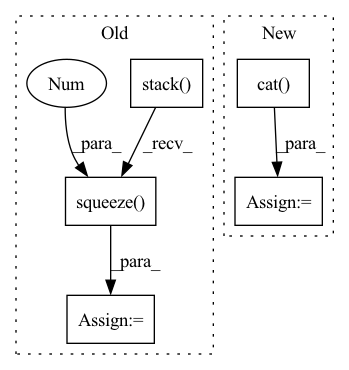

Pattern ID :2663

Before Change
// Back to batch first
attn_scores = torch.stack(attn_scores).transpose(0, 1)
mel_outputs = torch.stack(mel_outputs).transpose(0, 1).contiguous()
stop_tokens = torch.stack(stop_tokens).transpose(0, 1).squeeze(2)
// (B, T", mel_dim*r) -> (B, T, mel_dim)
mel_outputs = mel_outputs.reshape(B, -1, self.mel_dim)
After Change
// To tensor
mel_outputs = torch.cat(mel_outputs, dim=1) // (B, T_decoder, mel_dim)
attn_scores = torch.cat(attn_scores, dim=1) // (B, T_decoder/r, T_encoder)
stop_tokens = torch.cat(stop_tokens, dim=1) // (B, T_decoder)
// Validation check
In pattern: SUPERPATTERN
Frequency: 3
Non-data size: 5
Instances
Fragment ID: 8741957
Project Name: thuhcsi/tacotron
Commit Name: fea9ec535ec373aad564646f4f292fbee0217c29
Time: 2021-03-18
Author: johnson.tsing@gmail.com
File Name: model/tacotron.py
M Class Name: Decoder
N Class Name: Decoder
M Method Name: forward(4)
N Method Name: forward(4)
M Parent Class: nn.Module
N Parent Class: nn.Module
M File Name: model/tacotron.py
N File Name: model/tacotron.py
M Start Line: 87
M End Line: 187
N Start Line: 88
N End Line: 180
'>
Before Change
// Back to batch first
attn_scores = torch.stack(attn_scores).transpose(0, 1)
mel_outputs = torch.stack(mel_outputs).transpose(0, 1).contiguous()
stop_tokens = torch.stack(stop_tokens).transpose(0, 1).squeeze(2)
// (B, T", mel_dim*r) -> (B, T, mel_dim)
mel_outputs = mel_outputs.reshape(B, -1, self.mel_dim)
After Change
break
// To tensor
mel_outputs = torch.cat(mel_outputs, dim=1) // (B, T_decoder, mel_dim)
attn_scores = torch.cat(attn_scores, dim=1) // (B, T_decoder/r, T_encoder)
stop_tokens = torch.cat(stop_tokens, dim=1) // (B, T_decoder)
'>
Fragment ID: 8741958
Project Name: thuhcsi/tacotron
Commit Name: fea9ec535ec373aad564646f4f292fbee0217c29
Time: 2021-03-18
Author: johnson.tsing@gmail.com
File Name: model/tacotron2.py
M Class Name: Decoder
N Class Name: Decoder
M Method Name: forward(4)
N Method Name: forward(4)
M Parent Class: nn.Module
N Parent Class: nn.Module
M File Name: model/tacotron2.py
N File Name: model/tacotron2.py
M Start Line: 127
M End Line: 224
N Start Line: 127
N End Line: 216
'>
Before Change
def forward(self, data):
sparse_emb_list = self.embedding_layer(data)
feature_emb = torch.stack(sparse_emb_list, dim=1).squeeze(2)
lr_logit = self.lr_layer(data)
cin_logit = self.cin(feature_emb)
if self.dnn is not None:
dnn_logit = self.dnn(feature_emb.flatten(start_dim=1))
After Change
if self.dnn is not None:
dense_input = get_linear_input(self.enc_dict, data)
emb_flatten = feature_emb.flatten(start_dim=1)
dnn_logit = self.dnn(torch.cat([emb_flatten, dense_input], dim=1))
y_pred = lr_logit + cin_logit + dnn_logit
else:
y_pred = lr_logit + cin_logit
'>
Fragment ID: 8741954
Project Name: hasai666/rec_pangu
Commit Name: fde9c0f89b7cf58fb4737cfab2b982036aa7e8c1
Time: 2022-06-12
Author: wangkai@fuzhi.ai
File Name: rec_pangu/models/ranking/xdeepfm.py
M Class Name: xDeepFM
N Class Name: xDeepFM
M Method Name: forward(2)
N Method Name: forward(2)
M Parent Class: nn.Module
N Parent Class: nn.Module
M File Name: rec_pangu/models/ranking/xdeepfm.py
N File Name: rec_pangu/models/ranking/xdeepfm.py
M Start Line: 37
M End Line: 42
N Start Line: 37
N End Line: 43